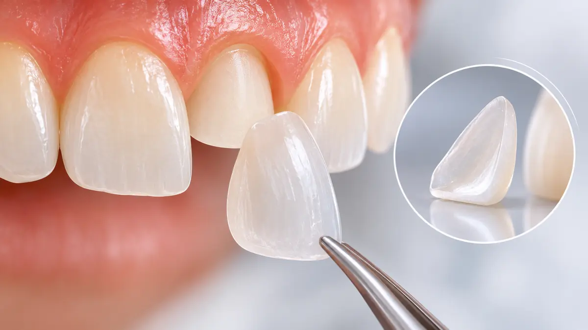
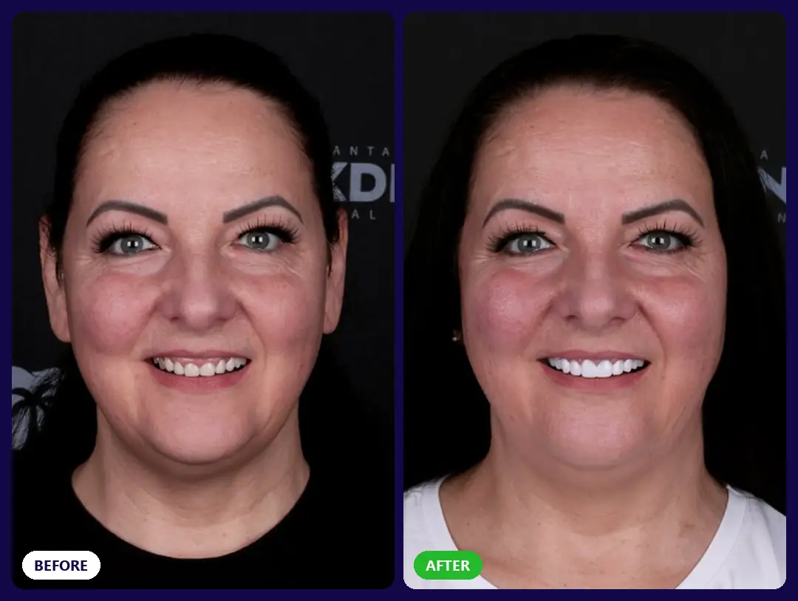
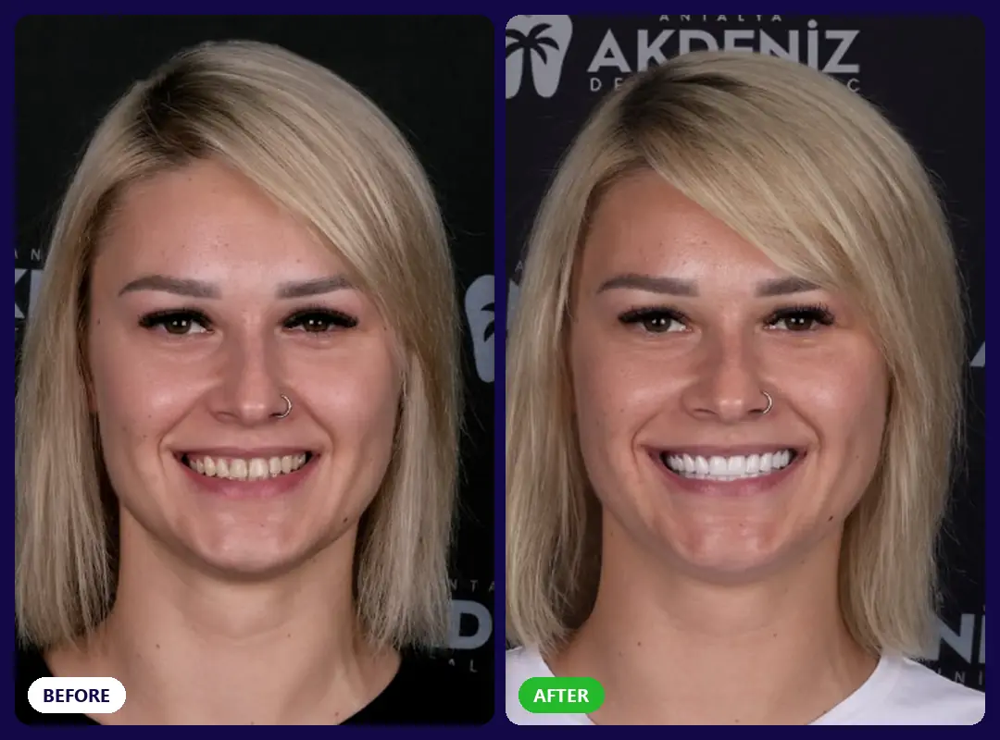
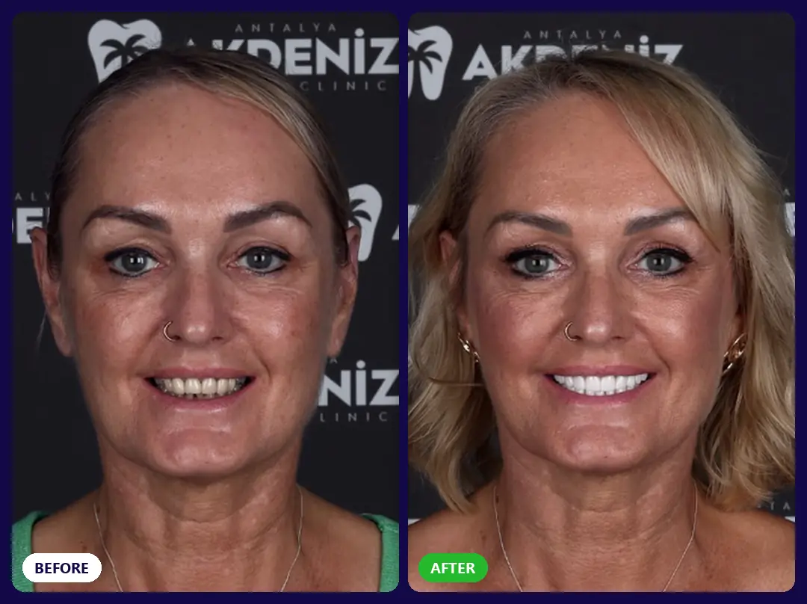
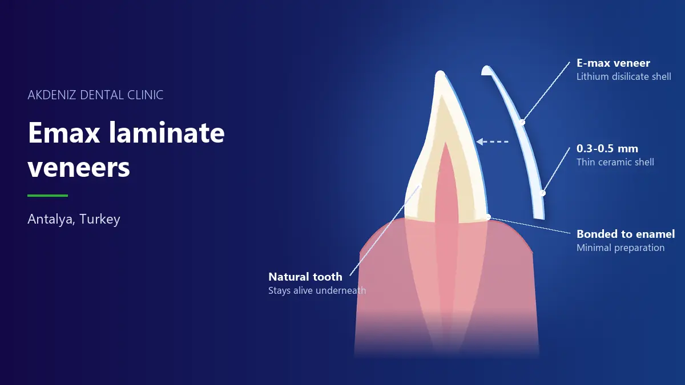

Emax veneers in Turkey are thin laminate veneers made from IPS e.max lithium disilicate, a glass-ceramic that combines natural translucency with high strength. At Akdeniz Dental Clinic in Antalya, Emax laminate veneers are planned digitally, produced in the clinic’s own dental laboratory and usually completed within 5 to 7 days, depending on the scope of treatment. Prices start from £200 per tooth.
Discover the Power of Emax Veneers and Laminate Veneers: Your Key to a Confident Smile
Emax veneers, widely used in cosmetic dentistry, provide an innovative solution for a multitude of dental issues. Crafted meticulously from robust and durable ceramic, these veneers offer high durability and strength. They serve as an excellent remedy for those looking to rectify common aesthetic problems such as chipped, stained, or misaligned teeth. Emax veneers are a type of laminate veneer bonded to the front surface of the teeth.
Made to order in highly-specialized dental laboratories, Emax veneers and laminate veneers are bonded securely to the front surface of your teeth. This bonding process is a meticulous and delicate task that demands a dentist with vast expertise and experience in handling Emax veneers and laminate veneers. When correctly applied, these veneers blend seamlessly with your natural teeth, paving the way for a dazzling, radiant smile that reflects the real you.
Emax Veneers Before and After in Antalya
The cases below show Emax laminate veneers placed at Akdeniz Dental Clinic in Antalya, Turkey. Each smile was planned individually, so results vary from patient to patient.



More results are available in the before and after gallery.
Unravel the Emax Veneers and Laminate Veneers Advantage
What sets Emax veneers and laminate veneers apart? Their main benefits are as follows. First, they are strong and long-lasting. Emax veneers and laminate veneers, renowned for their exceptional durability, stand the test of time. They withstand daily wear and tear well. In a world where first impressions count, a bright, unstained smile is an invaluable asset. Thankfully, Emax veneers and laminate veneers are exceptionally resistant to staining and chipping, ensuring that your smile remains untarnished and sparkling for years to come. Comfort is another pivotal feature of Emax veneers and laminate veneers. These ultra-thin veneers need only minimal tooth preparation, which keeps the fitting process comfortable. What's more, they feel just as natural as your real teeth, so you can talk, eat, and laugh without a worry.
Patients who want to achieve an aesthetic smile design by correcting both shape irregularities and addressing fractures, cracks, or gaps in their teeth are conducting extensive research on which method to use to resolve these issues. On the other hand, some patients express dissatisfaction over their teeth's lack of complete whitening after the teeth whitening procedure, expressing a desire for their teeth to gleam like pearls.
Whatever the reason, those who want to address their dental aesthetic problems also want their teeth to look natural and for the solution to be long-lasting.
This guide explains what patients need to know about e-max veneers, a metal-free veneer option used to address aesthetic problems of the teeth.
If you wish, after reading this article, you can contact AKDENİZ Dental Clinic, discuss any other questions you may have with our expert dentists, and safely undergo your treatment when you have made your decision.
What are Emax laminate veneers?

E-max veneers are a type of special ceramic-based dental veneers based on an integrated material and color concept for individual dental restorations, specially designed according to the patient's oral and dental structure, applied to the front surface of the teeth, and used for aesthetic purposes in dentistry.
What Are E-max Veneers Made From?
E-max veneer is made of lithium disilicate glass ceramic (LS2) or fluorapatite glass ceramic (FAP) by controlled heating and cooling methods at high temperatures. The production process of E-max veneer consists of glass production, heat treatment, crystallization, and shaping.
Lithium disilicate glass ceramic (LS2):
To produce lithium disilicate ceramics, lithium oxide (Li2O), silica (SiO2), alumina, and potassium oxide are mixed in certain proportions. The mixture is heated at a high temperature to form glass. The glass form is then cooled in a controlled manner to crystallize some parts of the glass. The glass is then subjected to further heat treatment to give it ceramic properties and increase its durability.
The ceramic material that has been made machinable for shaping is formed into blocks or discs. These disks or blocks can be pressed or processed into e-max veneers using CAD/CAM (Computer-Aided Design/Computer-Aided Manufacturing) technology.
Lithium disilicate glass ceramic material can be used for the following applications:
- Front/rear crowns
- Inlays/onlays
- E-max veneers
- Telescopic crowns
- Implant restorations
- Front three-unit bridge operation (press only)
Fluorapatite Glass-Ceramic (FAP)
Combining the properties of fluorapatite and glass ceramic, this material is a highly biocompatible and mechanically durable material with optical properties similar to teeth.
For the production of fluorapatite glass ceramics, phosphorus oxide, silica, calcium oxide, fluoride components, alumina, and potassium oxide are mixed in certain proportions to form the glass component. The raw material mixture is melted at high temperatures. The material is then crystallised under controlled heat. Fluorapatite glass-ceramic is mainly used as a layering ceramic that gives e-max restorations their final shade and surface character.
What are the advantageous properties of the materials from which e-max veneers are made?
Lithium disilicate glass ceramic (LS2) and fluorapatite glass ceramic (FAP) have many advantages due to the following properties: These properties and advantages:
- What makes E-max veneers special is the difference in the reflection and refraction of light in lithium disilicate and fluorapatite. Both materials reflect light like natural teeth and provide an aesthetic appearance. This difference makes e-max veneers very transparent.
- It is high-strength and resistant to breakage and cracking.
- Its very thin production compared to other ceramic materials provides many advantages.
- It eliminates aesthetic concerns as it is close to natural tooth appearance.
- It is biocompatible, and allergic reactions are very rare.
Who is suitable for Emax veneers in Turkey?
E-max veneers may be suitable for patients with the following dental problems. Suitability is confirmed during a dental examination.
Structural and deformed teeth:
Cracked or broken teeth:
E-max veneers are an effective solution for repairing cracked or broken teeth.
Worn teeth:
With e-max veneers, it is possible to restore the abrasions that occur on the teeth due to various factors and restore the old, healthy appearance.
Pits in teeth and tooth surface roughness:
Micro-roughness or damaged surfaces on teeth can affect their aesthetic appearance. Small pits or roughness in the teeth can be covered with e-max veneers to achieve an aesthetic appearance.
Crooked or asymmetrical teeth:
Obliquity of the teeth or symmetry disorders between the teeth, especially in the front teeth, cause a number of aesthetic problems in terms of aesthetics. E-max veneers can be preferred for the restoration of the symmetry of the teeth and the restoration of oblique teeth. Mild problems of this kind can be corrected aesthetically with e-max veneers.
Short teeth:
The size of short teeth can be lengthened with e-max veneers to achieve a more balanced and aesthetic appearance.
Discoloration of teeth:
In most cases, teeth discoloration can be removed by teeth whitening, but if the teeth have discolored too much and are resistant to whitening, then e-max veneers may be preferred to mask it with a thin layer of ceramic.
Discolorations caused by genetic factors:
Some patients are born with yellower or duller teeth due to genetic factors and are unable to lighten their teeth with whitening. E-max veneers offer an ideal solution to correct this situation.
Discoloration caused by eating and drinking habits:
Such discoloration is usually caused by habits such as smoking, coffee, tea, red wine, etc. and sometimes may not be corrected by whitening treatments. e-max veneers can be preferred to correct the color of the teeth and achieve a whiter appearance.
Bite problems:
Chewing, speech, or aesthetic problems can occur due to teeth not closing normally. Minor irregularities in the shape and length of the front teeth that affect the bite can sometimes be corrected with e-max veneers. More significant bite problems usually require orthodontic treatment first.
Gingival:
Long teeth that appear due to receding gums can be covered with e-max veneers to achieve a more balanced appearance.
Covering old fillings and restorations on teeth:
Old fillings or restorations on the teeth that have not given good results in terms of aesthetics can be covered with e-max veneers to provide a more natural appearance.
Large cavities in the teeth:
Once decay has been treated, e-max veneers can restore the appearance of front teeth whose shape has been affected by fillings, while preserving the remaining healthy tooth structure. Teeth with very extensive damage may need a different type of restoration.
Aesthetic concerns and smile design:
You may especially want your front teeth to have a more aesthetic appearance. In this case, emax dental veneers are often a suitable option. E-max veneers allow the smile to be designed according to facial contours and personal preferences.
What are the differences between porcelain and emax veneers?
The biggest difference between emax veneers and other types of dental veneers (porcelain, composite, and Lumineers) is that emax veneers are thinner, stronger, and necessitate less tooth reduction.
What are the benefits of E-max veneers?
- Similar to a natural tooth, its material, e-max veneer, transmits and reflects light, giving it a natural appearance. It perfectly matches the natural colour and structure of the teeth, resulting in no artificial appearance.
- E-max veneers perfectly achieves visual harmony by mimicking the natural transparency characteristics of teeth. Thus, it eliminates aesthetic concerns.
- Lithium disilicate ceramic makes it quite durable. E-max veneers are particularly resistant to chewing forces on the teeth and daily use. E-max is much more durable than traditional porcelain veneers, and the risk of cracking or breaking with long-term use is low.
- E-max veneers require minimal abrasion to the tooth. Without damaging the natural tooth tissue, the majority of the tooth's natural structure is preserved, and only a small portion from the front surface of the tooth is removed. Therefore, e-max veneers provide an aesthetic correction without damaging dental health.
- The ceramic from which e-max veneers are made is a biocompatible material. It blends well with the gums, and allergic reactions are very rare.
- Because e-max veneers are durable, they are long-lasting and offer a safe and healthy solution in the long term.
- It can be used to fix many dental problems; in particular, it offers a permanent solution for abrasions, cracks, and fractures in the teeth.
- Easy to clean and maintain.
- Because E-max veneers cover the surface of the tooth, they create less sensitivity to cold and hot foods or drinks.
- E-max material is resistant to sunlight and heat and does not discolor over time.
- It is resistant to light scratches.
Advantages of Emax veneers in Turkey
Requires less abrasion on the teeth:
Since it requires teeth shaving with minimal abrasion from the tooth surface, the natural structure and texture of the teeth are largely preserved. This shortens the procedure time.
More durable and long-lasting:
Emax veneers have higher durability than other types of veneers. The risk of cracking and breakage is lower than other porcelain veneers. It is more resistant to chewing force.
Preferred for many dental problems:
Emax veneers provide an important advantage in eliminating various dental problems. We have explained above in which cases e-max veneers can be preferred.
Resistance to stains:
Emax veneers are resistant to tooth stains and discoloration caused by certain habits (e.g., coffee, tea, and smoking). Personalized design and natural look.
Emax veneers can be designed individually. Dentists and dental technicians take your wishes and create a computer-aided design that matches your face type. The designed veneers are then pressed or milled from lithium disilicate ceramic. Your veneers are unique to you and look natural.
What Are the Disadvantages of E-max Veneers?
Although e-max veneers have many advantages, there are also very few disadvantages.
Irreversibility:
If you decide to have your e-max veneers removed, remember that your teeth will need to be reshaped or additional procedures will be needed to place new veneers. E-max veneers are irreversible
Sensitivity of the teeth, chewing, and irritation of the gums:
After the placement of emax veneers, some people may experience temporary, mild sensitivity. This sensitivity will go away after a week or two, while gum irritation is usually rare.
Cost:
Emax veneers are generally more expensive than other types of veneers. However, the cost will be determined by factors such as which procedures, such as tooth preparation or gum shaping, will be performed, the number of veneers needed, the experience of the dentist, and the location of the dental clinic.
How much are Emax veneers in Antalya, Turkey?
Prices in Turkey vary between clinics. At Akdeniz Dental Clinic in Antalya, E-max veneer prices start from £200 per tooth.
You can get information about e-max veneer prices by contacting Antalya AKDENİZ Dental Clinic directly.
Are Emax veneers in Turkey cost-effective?
The table below compares E-max veneer prices for a single tooth in Turkey and the United Kingdom.
E-max veneer price comparison:
|
Country |
Price per tooth |
|
Turkey |
From £200 |
|
UK |
£750 - £1,500 |
Why are veneers cheaper in Turkey?
The first reason for the low price of e-max veneers in Turkey is related to the exchange rate. So, because foreign currency is more valuable against the Turkish Lira, the price of e-max veneers is considerably lower for patients coming from outside Turkey.
E-max laminate veneer types
E-max press laminate veneers:
It is generally preferred for aesthetic smile design on the front teeth. E-max press laminate veneers are obtained by pressing lithium disilicate ceramic under high temperature and pressure. The dentist customizes this veneer according to the patient's measurements and needs.
E-max CAD/CAM laminate veneers
It can be used on both front and back teeth. With CAD (computer-aided design) and CAM (computer-aided manufacturing) technologies, digital impressions of the teeth are taken. Then, according to these measurements, e-max ceramic material is digitally processed and cut.
E-max layered laminate veneers
Used in anterior tooth restorations. E-max Layered veneers are created by applying multiple layers of ceramic on top of each other. Generally, the first layer is more opaque and the second layer is more transparent.
Emax Pressed-to-Shape Laminate Veneers
It is preferred for aesthetic purposes in front teeth. The exact shape of the tooth is created before the material is pressed. Since the shaping process is done in advance, the production time is shorter..
What is e-max ceram?
IPS e.max Ceram is a nano-fluorapatite layering ceramic. Dental technicians apply it in thin layers over lithium disilicate or zirconia frameworks to reproduce the natural colour and translucency of the teeth, particularly in complex aesthetic restorations.
What are the requirements to get Emax veneers in Turkey?
Make your travel plan:
If you are coming to Turkey for e-max veneers, you will need to determine your flight dates and the duration of your stay in Turkey. It is important to consider your stay in Turkey, the time spent on the flight, the time to settle into accommodation near our clinic, and the time for the e-max veneer application.
If you want to combine a holiday in Turkey with E-max veneer treatment, plan for 5 to 7 days of treatment within your stay. For example, a 10-day stay in Antalya leaves enough time for the treatment and some rest.
Learn about the opportunities offered to you in Turkey:
Many facilities are offered for your comfort during your veneers in Turkey.
What makes Turkey a leading destination for veneers?
Turkey has become a leading destination for veneers and dental aesthetics in general with its quality services, affordable prices, and modern technologies.
What should I expect during my veneer journey in Antalya, Turkey?
At every stage of your treatment in Turkey, accommodation in hotels near our clinic, airport pick-ups and transfers to and from the clinic, city tours, and many other facilities related to your care process are available. In addition to these facilities, a counselling service is also available and will make your treatment comfortable and stress-free.
Why choose Emax veneers in Turkey?
In Turkey, you can have e-max veneers applied by specialized physicians, modern clinics, and at affordable prices. With the advantage of the exchange rate, you can both vacation and complete your treatment in Turkey.
Emax veneer procedure in Antalya, Turkey
When you and your doctor decide to have e-max veneers, the following procedures will be performed.
Digital imaging:
At Akdeniz Dental Clinic in Antalya, the dentist first takes high-resolution digital images of your teeth and gums with an intraoral scanner. If you opt for e-max veneers, the dentist carries out the subsequent procedures. It can also be referred to as digital measurement.
Design:
With computer software, the design of the veneer to be applied to your teeth is made in accordance with your face type. Thus, the shape and dimensions of the e-max veneer, which will be unique to you, are determined.
Production of the emax veneers:
The approved design is pressed or milled from lithium disilicate ceramic in the dental laboratory, and the dental technician completes the final shade and surface details.
Shaving the tooth surfaces:
According to the measurements in the design, some shaving is done from the front surfaces of your teeth. Thus, your teeth are ready for the emax veneer to be placed.
Temporary veneers.
Temporary veneers can be used to protect your teeth until permanent veneers are made.
Bonding:
The tooth surfaces are cleaned with a special acid, and permanent emax veneers are bonded to your teeth with a special adhesive. A dental curing light then hardens the adhesive.
Check:
After fixing the emax veneers, the dentist performs final checks to ensure their alignment and harmony. Your emax veneers are now ready for use. You can use them with peace of mind.
Are Emax laminate veneers in Turkey better than crowns?
Laminate veneers and crowns usually depends on the patient's needs, aesthetic expectations and tooth structure. Both treatments have their own advantages and different areas of use. In Turkey, both treatment options are performed with high quality and are more advantageous in terms of price compared to the international market. When deciding which treatment to choose, it is important to have a detailed discussion with one of the dentists at our clinic and determine the best option based on your personal needs and expectations.
How long does Emax veneer treatment take in Turkey?
Emax veneer treatment in Antalya usually takes 5 to 7 days, depending on the condition of the teeth and the scope of treatment.
What if my Emax veneers from Turkey fall off?
In case your E-max veneers fall off, keep them in a box or soft cloth to prevent loss or damage and contact our clinic. Our dentists will be waiting for you to reattach your fallen veneers.
How to care for e-max veneers?
Proper care is essential to ensure the longevity of E-max veneers. Here is what you need to do for this:
- Brush your teeth at least twice a day using a soft bristled toothbrush. Avoid brushes with hard bristles, as these brushes can damage the surface of the veneers.
- Avoid hard foods to prevent the veneers from cracking or dislodging.
- Floss daily to prevent plaque build-up around the veneers
- Rinse your mouth with water after drinking colored drinks such as tea, coffee, and wine.
- Avoid smoking and tobacco products as they can cause stains on your veneers.
- If you have a habit of grinding or clenching your teeth, wear a night guard.
- Have your veneers checked at a dental check-up at least every 6 months.
How long can emax veneers last?
E-max veneers usually last 10 to 15 years. With good care and regular dental check-ups, many last 20 years or more. The research, the factors that affect lifespan and aftercare advice are explained in detail in how long do E-max veneers last.
Zirconia or E-max Veneers: Which Is Better?
The difference between them is the material they are made of and their appearance. Zirconia ceramics are produced by combining zirconium dioxide with oxygen in special furnaces. They are resistant to breakage, cracking, and abrasion.
E-max veneers are made of lithium disilicate ceramic and are very thin, translucent, and durable. They are bonded to the upper surface of the teeth. Which one is better depends more on your needs. If aesthetic appearance is at the forefront for you, e-max veneers may be a good choice.
Emax veneers in Antalya, Turkey: frequently asked questions
Do emax veneers look natural?
Yes. Emax veneers transmit light, are translucent and are matched to the natural colour of the teeth, which gives a natural-looking smile.
Will my emax veneer stay white?
Your e-max veneer will maintain its whiteness for many years with the right care.
Do e-max veneers cover the whole tooth?
E-max Veneer is usually applied only on the front surface of the front teeth. In this method, only the visible part of the tooth is covered, not the entire tooth. If the tooth is severely damaged, broken, or has a large filling, the entire tooth can be covered using e-max full crowns.
Can I use teeth whitener on emax veneers?
Teeth whitening products are not effective on Emax veneers.
Do emax veneers stain easily?
Thanks to their smooth and dense structure, Emax veneers are highly resistant to color-forming substances such as coffee, tea, wine, and cigarettes. Thanks to these properties, they retain their natural whiteness for a long time.
How strong are e-max veneers?
Damage to E-max veneers is rare. However, in cases such as cracking or breakage, your dentist can repair or replace them. E-max veneers can be used safely for many years as long as you pay attention to issues such as correct placement, regular maintenance, and compliance with your dentist's recommendation.
Is there an age limit for e-max veneer?
E-max veneers are usually applied after tooth development is complete (age 18). There is no upper age limit for E-max veneers.
Last but not least, Emax veneers and laminate veneers are designed to last for many years. This long-lasting solution to your cosmetic dental woes is indeed an investment worth considering.
Patients considering Emax veneers or laminate veneers can arrange a consultation with Akdeniz Dental Clinic in Antalya to find out whether this treatment is the right fit.
Spread the Cost of Your Treatment with Monthly Payments
Planning your treatment in Antalya? Learn how you can finance your dental treatment through Ideal4Finance with tailored monthly repayment options.